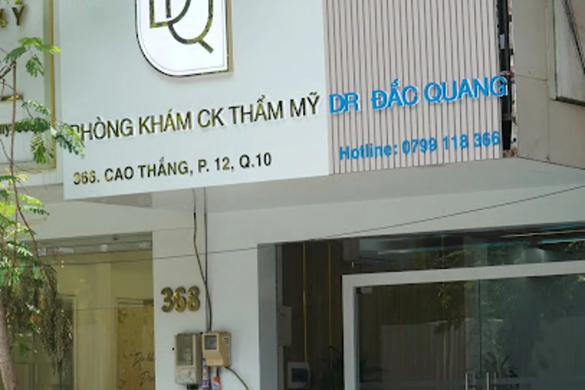
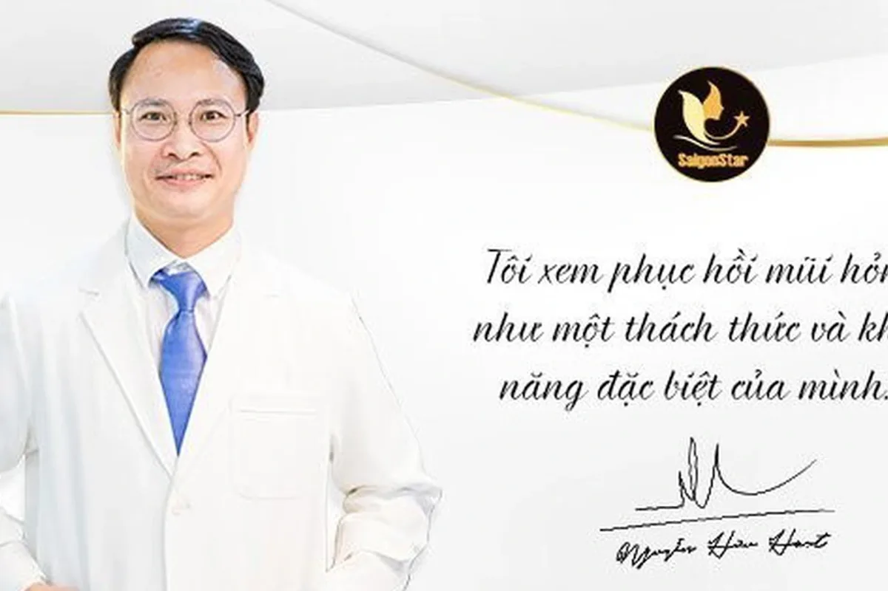

Danh mục: Bác sĩ – phòng khám
Bác sĩ thẩm mỹ giỏi, uy tín, bậc thầy sửa mũi tại TPHCM
Tìm bác sĩ thẩm mỹ giỏi, uy tín để sửa mũi hỏng tại TPHCM, nhiều khách hàng tìm đến BS.CKII Trần Đắc Quang – chuyên gia sửa mũi với hơn 10 năm kinh nghiệm trong ngành thẩm mỹ. Bác sĩ có thế mạnh xử lý các ca mũi và vùng hút mỡ chưa đạt, cùng nền tảng nhiều năm trong hồi sức cấp cứu. Phòng khám đặt tại 366 Cao Thắng, Phường Hòa Hưng, TP.HCM (Quận 10 cũ).



 Vidic Luxury Sun P28220
Vidic Luxury Sun P28220 Ventor-G – Kính mát nam
Ventor-G – Kính mát nam Eye coffret 1day UV – Base make (Màu nâu nhạt)
Eye coffret 1day UV – Base make (Màu nâu nhạt) Eye coffret 1day UV – First make (Màu nâu sáng)
Eye coffret 1day UV – First make (Màu nâu sáng) MAYBLASS 24030
MAYBLASS 24030 VIDIC 8840
VIDIC 8840 KINGBRAVER 6413
KINGBRAVER 6413 Hộp đựng kính EYEMEDI
Hộp đựng kính EYEMEDIVì sao BS.CKII Trần Đắc Quang được gọi là "chuyên gia sửa mũi"?
Bên cạnh cắt mí, nâng mũi, nâng ngực và hút mỡ, bác sĩ Đắc Quang nổi bật ở nhóm ca khó: mũi đã phẫu thuật nhưng chưa đạt hoặc gặp biến chứng. Các tình trạng thường gặp gồm:
- Mũi lệch, lộ sóng, đầu mũi bóng đỏ, da mũi mỏng.
- Co rút, bao xơ sau nhiều lần nâng.
- Vùng bụng, đùi hút mỡ không đều, lồi lõm, da chùng.
Mỗi ca sửa được thăm khám kỹ, đánh giá mô còn lại rồi mới lên kế hoạch tháo sụn cũ, tái tạo cấu trúc hoặc cân chỉnh lại vùng mỡ.
Nền tảng hồi sức cấp cứu – yếu tố an toàn khi phẫu thuật
Sửa mũi hỏng và sửa vùng hút mỡ thường mất thời gian hơn ca làm lần đầu. Kinh nghiệm dày dặn trong hồi sức cấp cứu giúp bác sĩ kiểm soát gây mê, theo dõi sát và xử lý kịp thời khi có bất thường – điều khách hàng nên ưu tiên khi chọn nơi tái phẫu thuật.
Thời điểm sửa thường sau khi mũi ổn định vài tháng; nếu có viêm, lộ sụn hay đau nhức, nên đi khám ngay.
Phòng khám 366 Cao Thắng và các bác sĩ thẩm mỹ khác tại Quận 10
Phòng khám chuyên khoa thẩm mỹ của BS.CKII Trần Đắc Quang tại 366 Cao Thắng, Phường Hòa Hưng, TP.HCM, thuận tiện cho khách hàng khu trung tâm. Website: drdacquang.com.
Khu vực Quận 10 cũ còn có BS.CKII Nguyễn Hữu Hoạt (400 Lê Hồng Phong) với thế mạnh nâng mũi, BS.CKI Đoàn Duy Dũng (324/2-4 Lý Thường Kiệt) và phòng khám Dr. Quân (722 Sư Vạn Hạnh) chuyên trẻ hóa không phẫu thuật. Xem thêm danh sách bác sĩ thẩm mỹ Quận 10 và bác sĩ phẫu thuật thẩm mỹ giỏi tại TP.HCM.
Sau phẫu thuật vùng mặt, mắt cần được bảo vệ khỏi nắng và bụi. EYEMEDI đo thị lực miễn phí, tư vấn kính mát chống UV phù hợp.
👁 Đặt lịch đo mắtCâu hỏi thường gặp
Bác sĩ nào sửa mũi hỏng giỏi tại TPHCM?
BS.CKII Trần Đắc Quang – chuyên gia sửa mũi hơn 10 năm kinh nghiệm, phòng khám 366 Cao Thắng, Phường Hòa Hưng (Quận 10 cũ), được biết đến với các ca sửa mũi hỏng và sửa vùng hút mỡ chưa đạt.
Mũi hỏng bao lâu thì sửa lại được?
Thường nên chờ mũi ổn định vài tháng sau lần phẫu thuật trước. Nếu có viêm, lộ sụn, đau nhức thì cần đi khám ngay để bác sĩ xử lý.
Vì sao nên chọn bác sĩ có kinh nghiệm hồi sức cấp cứu?
Ca sửa lại thường phức tạp, kéo dài hơn. Bác sĩ vững hồi sức cấp cứu kiểm soát gây mê, theo dõi và xử lý tình huống tốt hơn, giúp ca mổ an toàn.
Thông tin trong bài mang tính tham khảo, không thay thế chẩn đoán của bác sĩ chuyên khoa mắt.